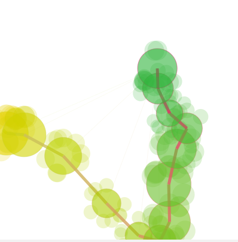

Posted by tiep on Aug 31, 2007
im having trouble with the codepart in the editor (help-:)
you might remove the ' between STORE and EVERY .
copy and paste seems to do the trick..
action: http://www.youtube.com/watch?v=nNZG54qE94U
Posted by Tom De Smedt on Sep 05, 2007
It would be nice if we bundled this into a library. However, the author of AMStracker prohibits redistributing his application. If we could get his permission to bundle the tool in a NodeBox library we would have a fun little toy.
Best regards,
Tom
Posted by tiep on Sep 11, 2007
do I or do U send him a mail ?
or did you already ? it would be
stupid to do it twice ..
Posted by Tom De Smedt on Sep 11, 2007
Best if you do it. Then you can give an example of possible usage with your project.

amstracker in nodebox
Posted by tiep on Aug 31, 2007
for who it might be of interest .. or just for the fun.
start throwing the machine :)AMSTracker is a command-line program that retrieves acceleration data from the Sudden Motion Sensor in Apple notebook computers.
download amstracker at
http://www.osxbook.com/software/sms/amstracker/
you can create a pipe that will transfer data from the command line tool to nodebox by using popen() command.
in this case ..